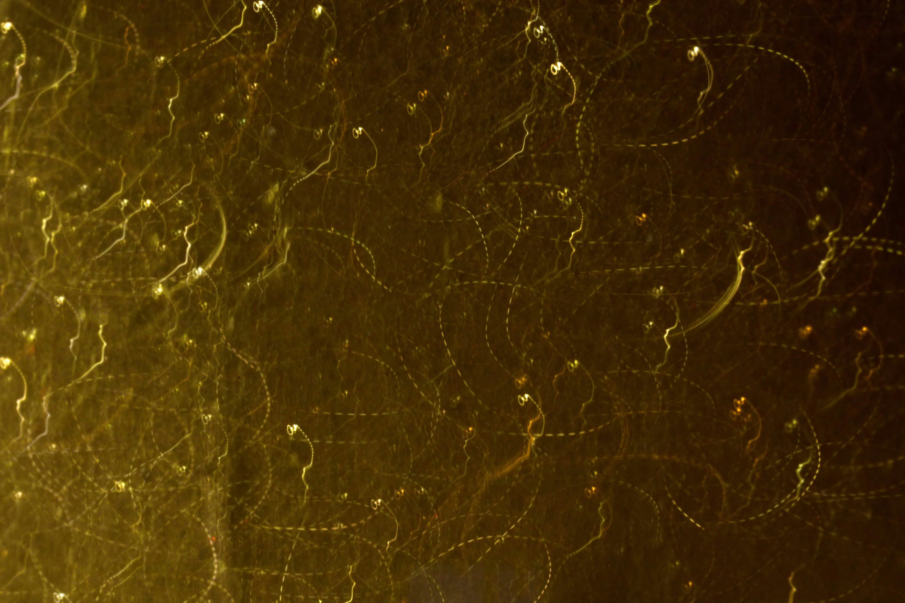

Arcahive Text

G.H에 따른 수난
그래서 불현듯 방의 내부로 시선을 돌렸다. 이글이글 불타고 있는, 하지만 적어도 단 하나의 거주민도 없는.
아니다, 이 모두는 나를 미치게 하지도 않았고 제정신을 잃게 만들지도 않았다. 그건 단지 시각의 명상일 뿐이었다. 명상의 위험은 의도하지 않은데도 갑작스럽게 생각이 시작되는 것이다. 생각은 이미 명상이 아니다. 생각은 사람은 목적지로 이끈다. 가장 안전한 명상의 방법은 '보는 것'이다. 그것은 사고의 언어를 포기하기 때문이다. 요즘은 전자 현미경이 있어서 대상을 원래 크기의 16만 배로 크게 보여준다는 것을 나는 안다. 하지만 전자 현미경으로 보는 것을 환각이라고 부르지는 않겠다. 설사 극도로 작은 물체가 괴물처럼 거대해져서 알아볼 수 없을 지경이 되더라도.
내 시각적 명상이 틀렸다면?